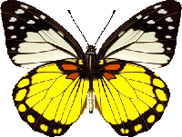
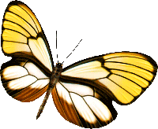
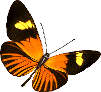
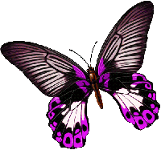
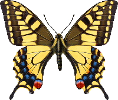
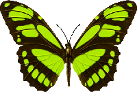

 蝴蝶与环境 |
|||
|---|---|---|---|
|
|||
 蝴蝶的一生，是生命形态的奇幻之旅，它要经历卵、幼虫、蛹和成虫四个截然不同的阶段，这种发育方式被称为“完全变态”。一切始于一片绿叶。雌蝶将微小的卵产在寄主植物上。几天后，幼虫破壳而出，它的唯一使命便是进食，身体随之迅速膨大，并数次蜕去旧皮。  当幼虫长到足够肥硕，便停止进食，开始化蛹。它吐丝固定自己，形成看似静止的蛹壳。在这外壳之下，一场重构正在进行：幼虫的器官被完全分解，再重新编码、生长，构建出蝴蝶的复眼、翅膀和长喙。时机成熟时，蛹壳裂开，一只湿漉漉的蝴蝶挣扎而出。它必须将体液泵入翅脉，让翅膀伸展晾干。当双翼变得坚硬绚丽，它便成为花间穿梭的精灵，以花蜜为食。生命的最后篇章，全然献给了繁衍——寻找伴侣，产下新一代的卵，而后走向终点。 从贪吃的幼虫，到静止的“生命熔炉”，再到空中翩跹的舞者，蝴蝶的一生，是一场关于蜕变与延续的壮丽轮回。  蝴蝶在花间飞舞时，其实正担任着"传粉使者"的角色。当它伸出虹吸式口器吸食花蜜时，身体会沾上花粉，待飞往下一朵花便完成授粉。蝴蝶偏好色彩鲜艳、香气浓郁的花朵，这种选择性使它们成为某些植物重要的授粉媒介。 蝴蝶与生态环境联系紧密。首先，蝴蝶对环境极为敏感，幼虫只取食特定寄主植物，成虫对蜜源植物也有明确偏好，因此一个地区蝴蝶种类的丰富程度，直接反映当地植物多样性的健康状况。其次，蝴蝶生命周期短暂脆弱，气温、湿度变化都会影响其生存，这使它们成为重要的"环境指示生物"——种群的增减可预警气候变化或栖息地退化。 在食物链中，蝴蝶幼虫是鸟类、蜘蛛等捕食者的食物来源，成虫则为更大生物提供能量。保护蝴蝶，本质上是在保护生态平衡。减少农药使用、种植本土蜜源植物，都能为蝴蝶创造生存空间。当我们看到蝴蝶自由飞舞，那不仅是美的享受，更是大自然在告诉我们：这片土地依然健康，生命之网依然完整。 |